東洋屈指のリゾートアイランドでの珍寺修行。
異国の地での修行において一番大事なのは体調管理であることは言うまでもない。
そのためシュノーケル→マッサージ→昼寝→タイ料理→海水浴→マッサージ→昼寝→魚貝類→マッサージ→買い物→たまにはイタリアン、という激務とも思えるハードなメニューをこなし体調を整えいざ修行の再開、なのである。
向かった先はプーケット島のほぼ真ん中に位置するワットシースントン。
ここには巨大寝釈迦がおわすのだ。
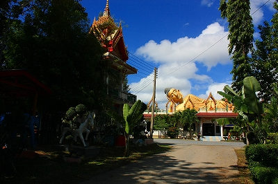
お寺の雰囲気としては激ローカル。観光客どころかタイ人の参拝者すらいない。
シーンとした中、境内を散策してみる。
いかにもタイ風の鐘楼や
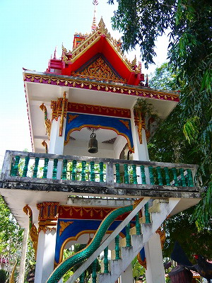
サッカーボールのような塔などと一緒に
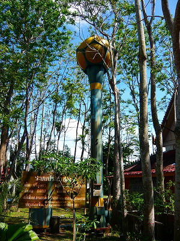
動物のコンクリ像が出現。
まずパンダ。
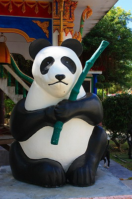
お馬鹿ちゃんたち。
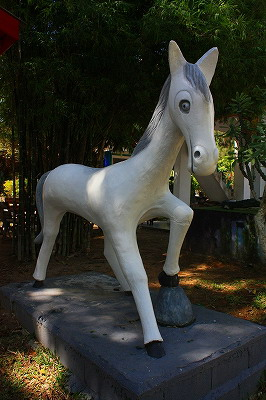 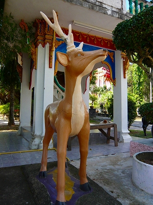
両生類
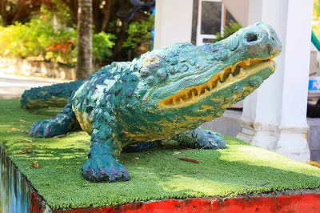
水牛
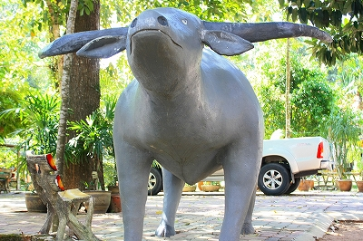
牛
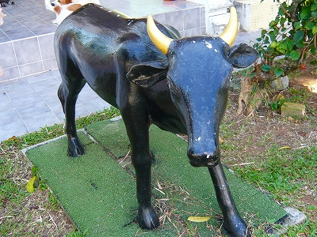
象
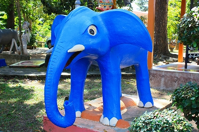
…この象は凶悪っぽいすね。
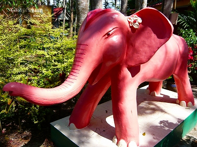
アユタヤ近辺で数多く見られた鶏の像をはじめ鳥類も数多く生息している。
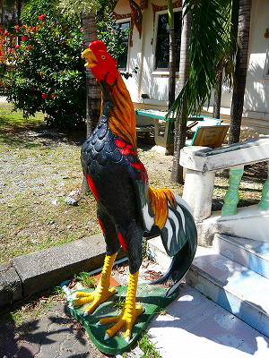 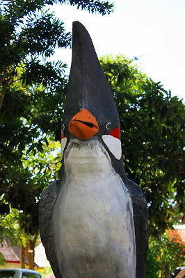
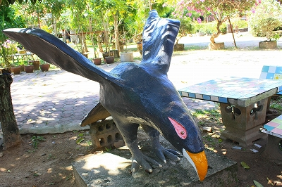
さすがに籠の中の鳥までつくりものって如何なものかと思ってしまう。
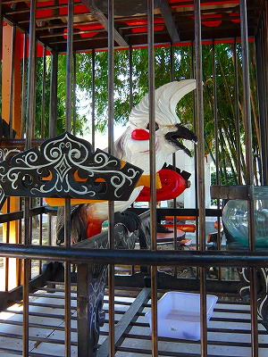
タイ版仁王様のヤックさんも堂々のそびえっぷり。
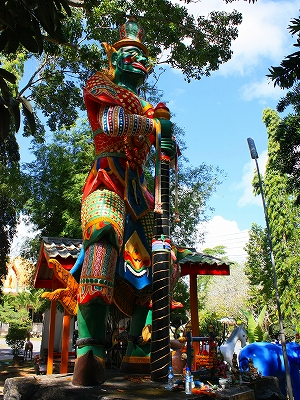
そんな一画に見逃せない輩が。
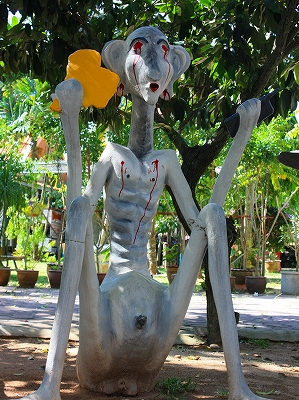
地獄の亡者と思われるコンクリ像が座っている。
右手には黄色い謎の物体を持っている。
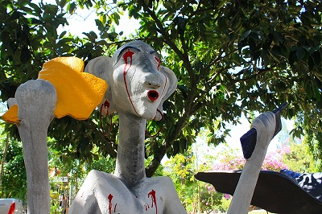
そして左手には何と携帯電話！
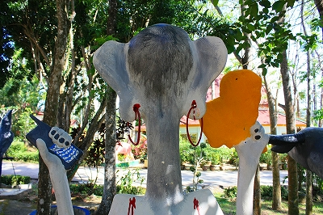
モトローラ！
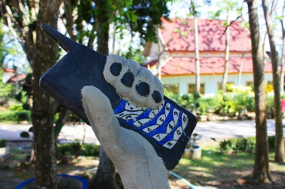
タイの人たちは携帯大好き。街角には携帯をデコレーションしたりカスタマイズしたり違法改造したりするお店がわんさか。
機種はモトローラかノキアがほとんどっぽいですね。
マナーに関してはアジア標準規格といいますか、トコロ構わず大声で喋りまくり、着メロのボリュームはマックス。
トコロ構わずブルートゥースで喋ってたりするもんだから頭がアレな人なのかと思っちゃうとそうでもなかったり、ややこしいし、うるさいし、まあ携帯に関しては野放図なことこの上なし、状態ですわ。
そういえばチョット前まで東南アジア諸国でランバダの着メロが大流行してましたねー。アジアの人々の琴線に触れるサムシングがあったのだろうか、着メロのみならず、タクシーのウインカーが点灯する度に、自動ドアが開く度に、店に客が入ってくる度にあの「は～らほれひ～ほにゃららほにゃららにゃ～～ん」という哀愁メロディが流れるのだ。しかも下品な電子音で。&爆音で。今はどこにもないですねえ、ランバダ（ランバダ知らない坊ちゃん達はニコ動で探してみてね)。
てな具合に目から血が出てようとタイでは携帯は手放せないグッズなのだ。
…ところで…
どうも華南や東南アジアの人達をみていると、あの世とこの世の距離感の違いのようなモノを感じる。
チョット海外旅行に行く、程度のノリ。
だって普通あの世に携帯持っていかないでしょう。
日本だったら入り口の奪衣婆による手荷物検査で即没収ですよ。
何なんだろう、この敷居の低さったら。
時が止まったかのような境内。犬も死んだように眠ってます。
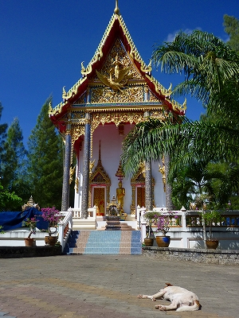
トイレの入り口に書かれた素敵なイラスト。コレなら誰でも判りますね。
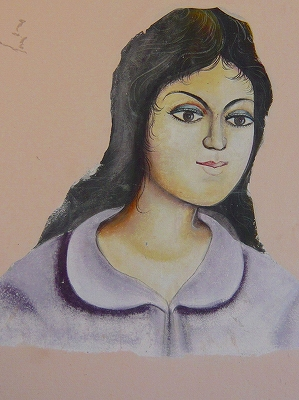 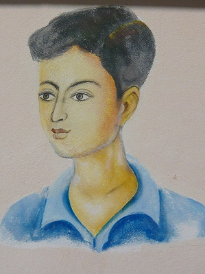
そんなこんなで寝釈迦サマに向かう。
おお、お坊様軍団がお勤めに。
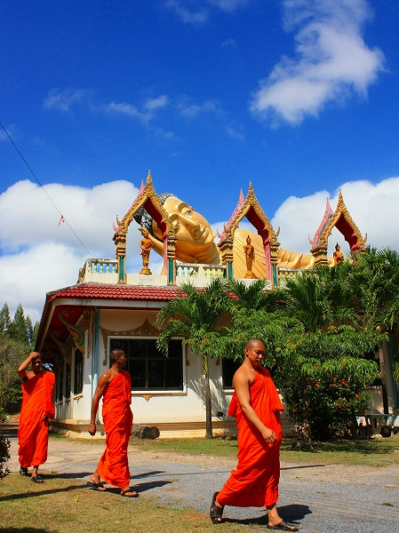
寝釈迦サマは本堂の屋上におわす。
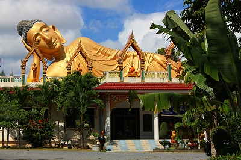
手前の立像が人間よりチョット大きいサイズ。ので寝釈迦サマは２～３０メートルといったところか。
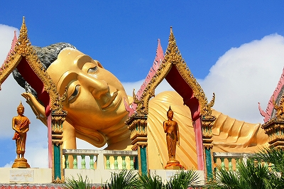
階段を上って屋上に出る。とそこは寝釈迦さんの後姿。
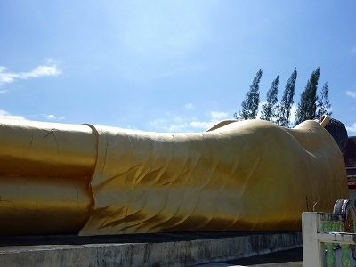
足の裏。タイの涅槃像の足の裏は真っ平らで模様が刻まれているパターンも多いがここのは普通に写実的。
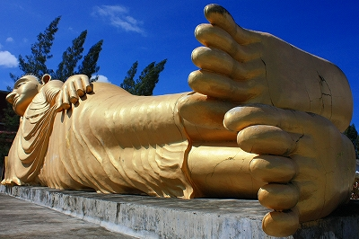
足の裏の割れた部分を金箔で補修している。
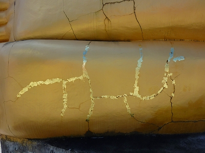
気持ちは判るが金箔で表面を覆うよりパテで目詰めでしょう。
ノッチ、というかオバマ顔。
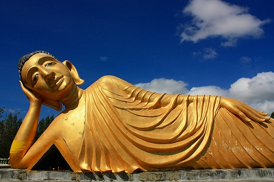
この表情！日本の仏像と最も異なるのはここなのである。
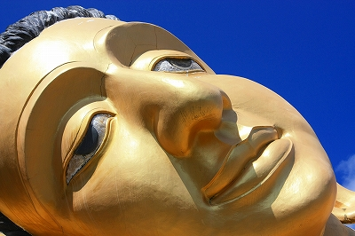
日本ではまずお目にかかれないリラックスしまくりの仏様。
見ていると全身の力が抜けてピースフルな気持ちになってくる。私はこの激ユル顔の仏サマが堪らなく大好きなんですよ。
涅槃像の右脇の下は参拝スペースになっている。
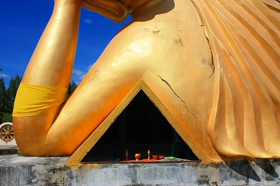
小さな香炉と蜀台とお供え物、そしてプラの椅子があるだけ。
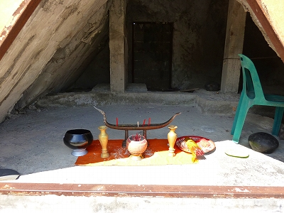
右側を覗くと寝釈迦さんの胎内空間が広がっている。
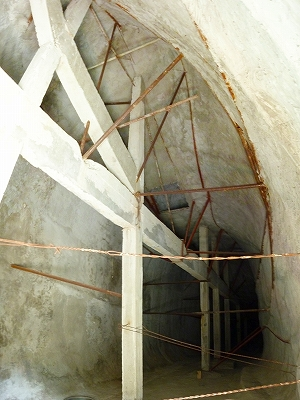
結構華奢な構造体ですね…
次の修行へGO！
泰国珍寺修行 南へ
珍寺大道場 HOME